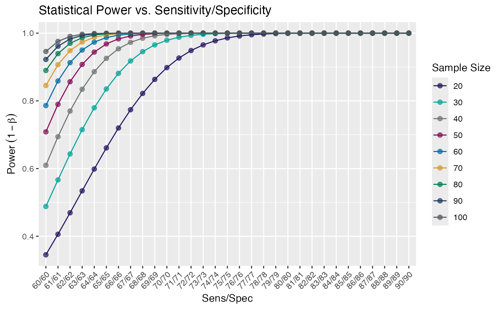
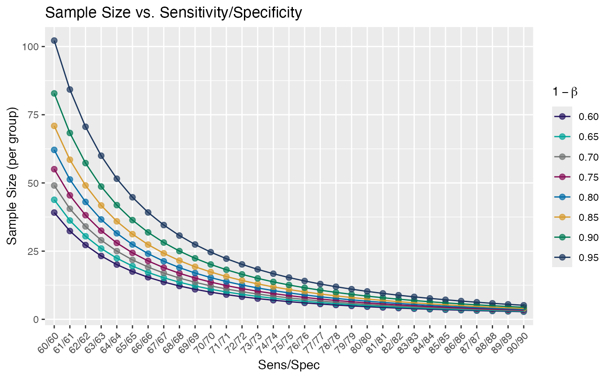

ks.RdConvert KS-distance to effect size using the standard
inverse error function conversion: qnorm( (x + 1) / 2) * 2.
Calculate power and sample size tables for a range of known
powers or sample sizes, and relate them to a sensitivity/specificity.
The calculation relies on a conversion from sens/spec to KS-distance and
an approximation from KS-distance to effect size: qnorm((ks + 1) / 2) * 2.
Plot power curves of call to ks_power_table(),
an object of class ks_pwr_table. You can plot
either power curves or required sample size curves.
This differs from standard power curves
in that the independent variable (usually effect size)
is a varying sensitivity/specificity value.
numeric(n) in [0, 1]. A sequences of KS-distance(s).
Or a ks_pwr_table object, from call to ks_power_table(),
which is a tibble with n and power.
numeric(n) in (0, 1). A sequence of
power levels to evaluate the required samples size.
integer(n). A sequence of sample sizes per group
to evaluate the corresponding power.
double(1). The significance threshold (\(\alpha\)),
the probability of a significant result given the null hypothesis,
i.e. a false positive. If desired, Bonferroni correction should
be implemented here.
logical(1). Should the power data frame be plotted?
If FALSE, the sample sizes are plotted.
Additional arguments as requpred by the plot() generic.
Effect sizes corresponding to x.
A list of:
A data frame of the number of samples required in each
comparison group to detect an effect corresponding to a given set of
sens/spec values (60/60 to 90/90) and given vector of power values
(default power_vec = seq(0.6, 0.95, 0.05)).
The corresponding KS-distances of the sens/spec values are also included.
A data frame containing
the power to detect an effect corresponding to a given set of sens/spec
values (60/60 to 90/90) given vector of sample sizes in each comparison
group (default n_vec = seq(20, 100, 10)). The corresponding KS-distances
of the sens/spec values are also included.
stats::power.t.test(), ks2delta()
ks2delta(0.45)
#> [1] 1.19552
ks2delta(seq(0.1, 0.9, length.out = 5))
#> [1] 0.2513227 0.7706409 1.3489795 2.0728668 3.2897073
tables <- ks_power_table()
tables
#> $n
#> # A tibble: 31 × 10
#> SS KS `power=0.60` `power=0.65` `power=0.70` `power=0.75` `power=0.80`
#> <chr> <dbl> <dbl> <dbl> <dbl> <dbl> <dbl>
#> 1 60/60 0.2 39.1 43.8 49.1 55.0 62.1
#> 2 61/61 0.22 32.4 36.2 40.5 45.5 51.3
#> 3 62/62 0.24 27.2 30.5 34.1 38.2 43.0
#> 4 63/63 0.26 23.2 26.0 29.0 32.5 36.6
#> 5 64/64 0.28 20.1 22.4 25.0 28.0 31.5
#> 6 65/65 0.3 17.5 19.5 21.8 24.4 27.4
#> 7 66/66 0.32 15.4 17.2 19.1 21.4 24.1
#> 8 67/67 0.34 13.7 15.2 17.0 18.9 21.3
#> 9 68/68 0.36 12.2 13.6 15.1 16.9 19.0
#> 10 69/69 0.38 11.0 12.2 13.6 15.1 17.0
#> # ℹ 21 more rows
#> # ℹ 3 more variables: `power=0.85` <dbl>, `power=0.90` <dbl>,
#> # `power=0.95` <dbl>
#>
#> $power
#> # A tibble: 31 × 11
#> SS KS `n=20` `n=30` `n=40` `n=50` `n=60` `n=70` `n=80` `n=90` `n=100`
#> <chr> <dbl> <dbl> <dbl> <dbl> <dbl> <dbl> <dbl> <dbl> <dbl> <dbl>
#> 1 60/60 0.2 0.345 0.488 0.610 0.708 0.786 0.845 0.890 0.922 0.946
#> 2 61/61 0.22 0.406 0.567 0.694 0.790 0.859 0.907 0.940 0.961 0.976
#> 3 62/62 0.24 0.469 0.643 0.770 0.857 0.913 0.948 0.970 0.983 0.990
#> 4 63/63 0.26 0.534 0.715 0.834 0.908 0.950 0.974 0.987 0.993 0.997
#> 5 64/64 0.28 0.599 0.779 0.886 0.944 0.973 0.988 0.995 0.998 0.999
#> 6 65/65 0.3 0.661 0.835 0.926 0.968 0.987 0.995 0.998 0.999 1.00
#> 7 66/66 0.32 0.720 0.881 0.954 0.983 0.994 0.998 0.999 1.00 1.00
#> 8 67/67 0.34 0.774 0.918 0.973 0.992 0.998 0.999 1.00 1.00 1.00
#> 9 68/68 0.36 0.822 0.945 0.985 0.996 0.999 1.00 1.00 1.00 1.00
#> 10 69/69 0.38 0.863 0.965 0.992 0.998 1.00 1.00 1.00 1.00 1.00
#> # ℹ 21 more rows
#>
#> attr(,"class")
#> [1] "ks_pwr_table" "list"
# S3 plot method
plot(tables)

plot(tables, plot_power = FALSE)
